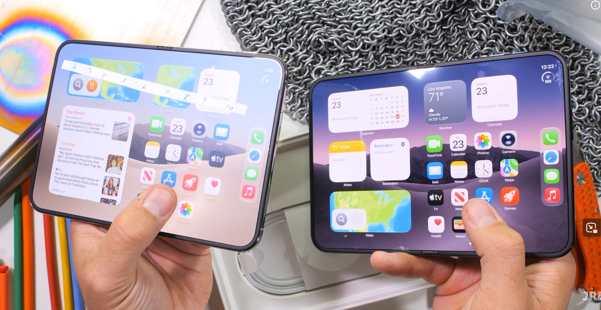
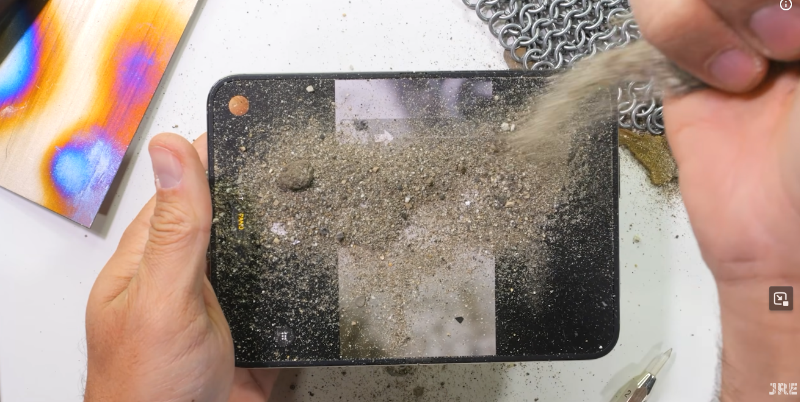
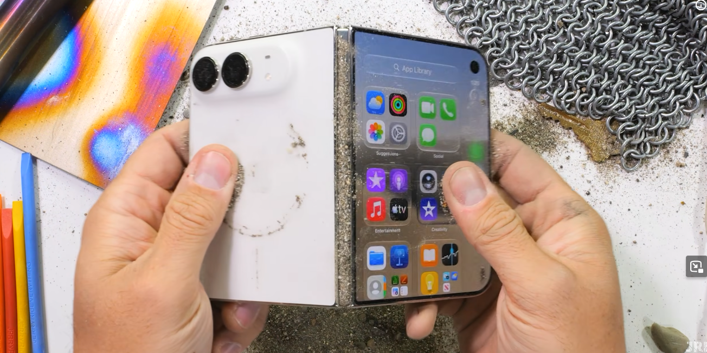
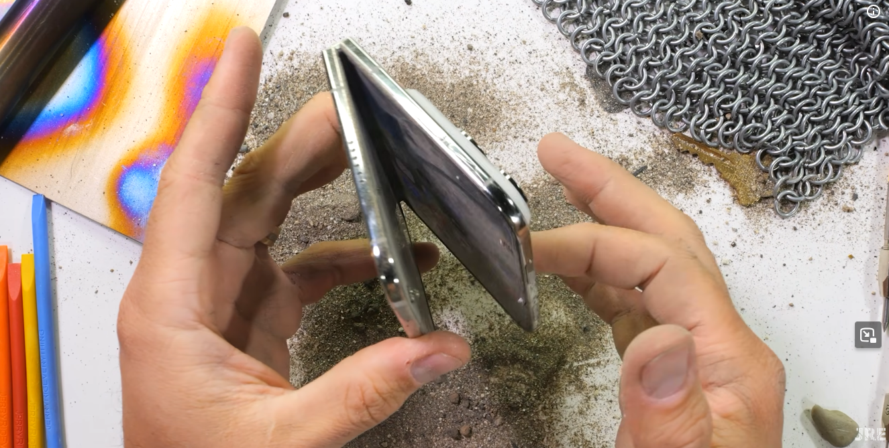
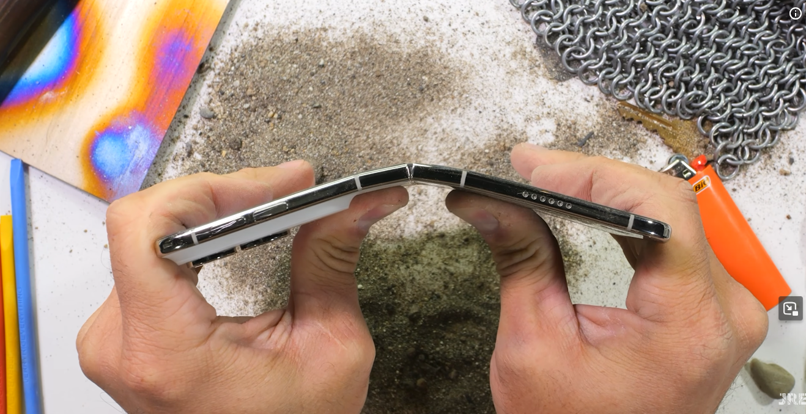
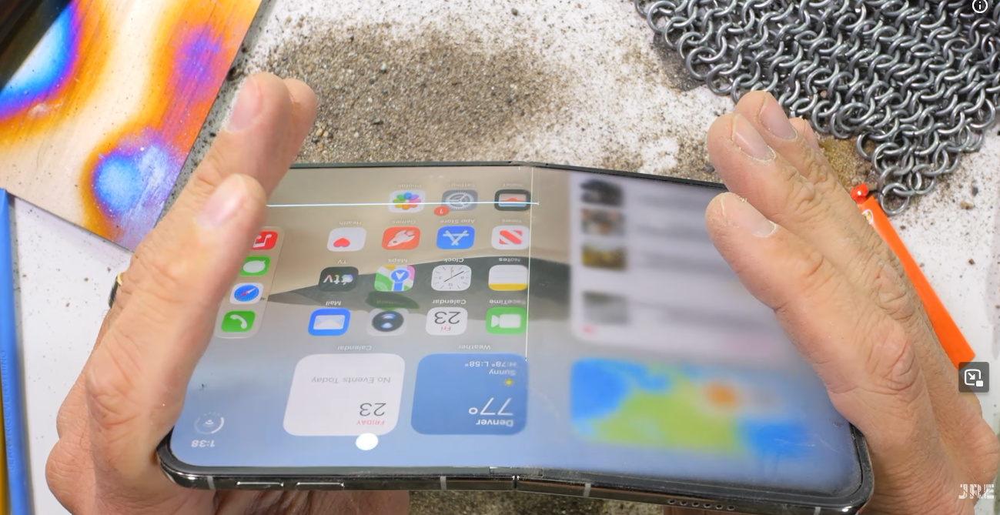
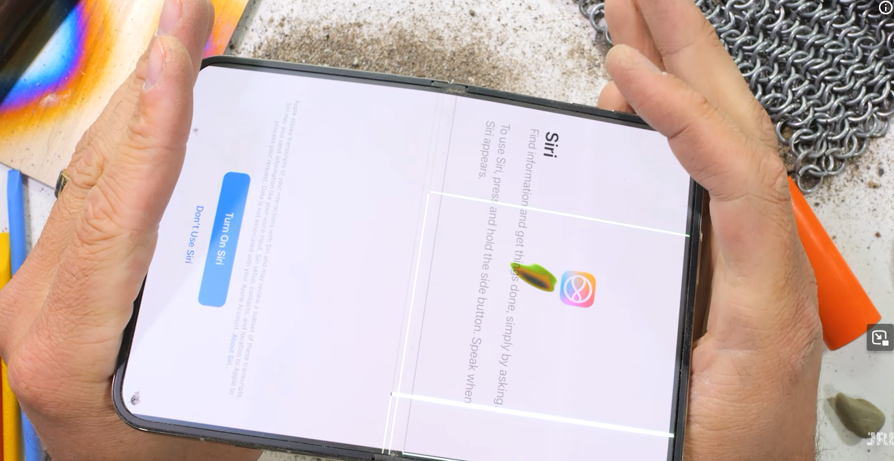
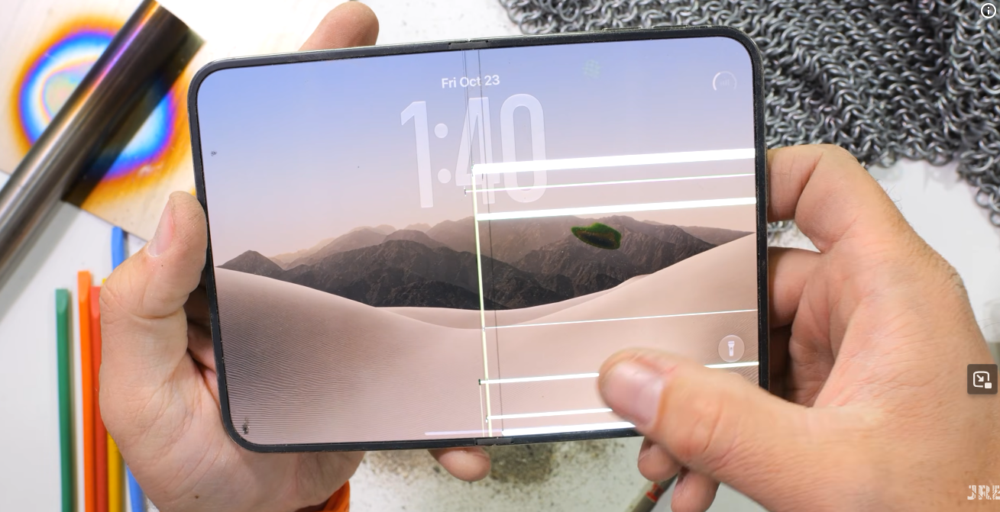

나노텍스쳐 필름 뗀 모습(우측)



IP68 방수방진이라 내부로는 유입이 안될텐데
힌지 자체가 이물질에 매우취약. 저거 넣은다음 이후로 안접힘.
오히려 빡빡해서 빠질 공간이 없는듯함.
다 안접힌 상태로 덜렁덜렁 거림.
라이터로 지지기.
매우 우수하게 버팀.
내부 디스플레이는 자국은 남았지만 사용에 문제 X
외부 디스플레이는 상당량 지졌지만 자국 X




대망의 뒤로꺽기.
디스플레이 한방에 바로 바사삭.....
당연히 이후에 앞으로 접는것도 불가능.
결론
실체감 성능 = 아이폰 승
실체감 내구성 = 폴드 승
사용감 = 일장일단
딴건 그러려니 하겠는데
확실히 듀오 힌지는 좆된거 맞는거 같다.
고장난게 다 똑같은 부위인데다
방진이 제대로 안된다.
접히지 않는 것이 애플감성임